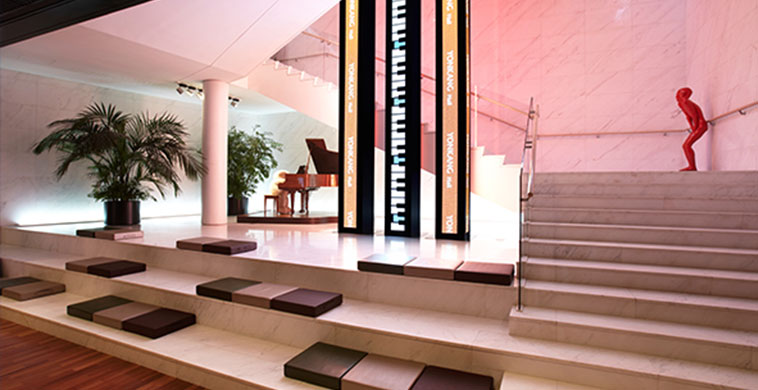

-
1978Establishment of the Doosan Yonkang FoundationThe Doosan Yonkang Foundation was founded to realize ‘Yonkang’ Too Pyung Park’s belief that “education is the driving force of national development.”

-
1979The first Scholarship Award CeremonyThe foundation kicked off its scholarship programs by awarding scholarships to 199 students financial hardship from 32 schools.

-
1988Establishment of the Korean Studies Dept.
at the University of Auckland,
New ZealandFor the first time as a private organization,
the Foundation established Korean language courses
at the University of Auckland in a bid to introduce the Korean language and Korean culture worldwide. Since then, it has been supported by universities in Spain, China, and the U.S.A.
-
1989Book donation program for Koreans overseasBooks, including Korean textbooks, dictionaries and novels, were sent to Koreans living overseas in such countries as China and Russia for the first time, to boost their pride in their motherland.

-
1989Overseas Study Tour for Teachers of History and Social StudiesThe Foundation began sponsoring overseas study tours for teachers of history and social studies in order to boost their pride in our history and culture and to enable them to use their experiences on the tour to educate our children with a correct understanding of history.

-
1990Support for students at Auckland Univ. to study Korean at Yonsei UniversityThe Foundation supported exchange students majoring in Korean studies at the University of Auckland, providing them with full tuition fees for study at the Korean Language Institute of Yonsei University.

-
1992Chinese Research ScholarshipScholars of Chinese studies were selected and provided with a research scholarship to further their understanding of China, a nation that is currently reshaping the global economic landscape on the back of its rapid growth.

-
1993Doosan Yonkang Environment Research FundThe Doosan Yonkang Foundation started to provide research funds to professors specializing in the environmental field to help them create a habitable environment, by selecting research subjects from ten universities each year.

-
1993Opening of Yonkang HallYonkang Hall was established in the birthplace of ‘Yonkang’ Too-Pyung Park, founder of the Doosan Group, in 1993 as part of the project to commemorate the 100th anniversary of Doosan Group.

-
2006Doosan Scholarship for Teenagers in NeedThe foundation launched the Doosan Scholarship program to support elementary and junior high school students in difficult circumstances until they graduate from junior high schools.Invitation Event for Recipients of the ‘Doosan Scholarship for Teenagers
in Need’An invitation event was held for elementary school recipients of the ‘Doosan Scholarship for Teenagers in Need’ to provide them with an outdoor educational experience with employees of the Doosan Group.
-
2006Doosan Yonkang Academic Awards,
Medical Article DivisionThe Doosan Yonkang Academic Awards were established to promote the development of medical technology in Korea and to motivate young medical scientists to carry on with their research.
-
2006Book Donation Program for Schools in Remote AreasBooks are donated to schools in remote areas to promote creativity and wisdom through reading.

-
2006Scholarships for Students in Disaster-Stricken AreasScholarships are awarded to students in areas affected by natural disasters to help them continue with their studies.
-
2007Overseas academic observation tour
for science teachersWinners of the ‘Science Teacher of the Year Award’ were given the opportunity to observe science-related facilities at home and abroad as well as overseas schools annually to help them foster gifted science students.
-
2007After-school program for children
from low-income familiesThe ‘After-school Care Program for Elementary School Students’ from low-income families was established to reduce the burden of private education costs and contribute to their educational welfare.
-
2007Book donations to Korean schools overseasThe customized donation of books to Korean schools overseas was initiated by reforming the book donation project for Koreans overseas originally launched in 1989.

-
2007Book Donations to Children’s Hospitals NationwideUnder this program, books are donated to special schools inside children’s hospitals that were established nationwide for children who cannot attend school regularly due to illness.

-
2007Opening of the Doosan Art CenterThe Doosan Art Center re-opened its doors in 2007, celebrating the 111th anniversary of its founding.
The Center is dedicated to discovering and fostering young artists who are deeply immersed in their respective fields, and stages diverse performances and exhibitions in Yonkang Hall, Space 111 and Doosan Gallery to that end.
-
2007Doosan Yonkang Academic Awards, Surgeon’s DivisionThe Doosan Yonkang Academic Award for Surgeons was established to award outstanding surgeons and encourage them to continue with their research.

-
2008Doosan Sports Dream Tree ScholarshipThese scholarships are provided to promising junior athletes in unpopular or basic sports in order to discover and foster athletic talents.

-
2008Support for the Concordia Language Village in Minnesota, U.S.A.The foundation supported ‘Sup sogeui Hosu’ of the Concordia Language Village in Minnesota, U.S.A., the world’s one and only Korean language village.

-
2008Launch of the DAC Artist ProgramThe DAC Artist program discovers young artists in the performing arts and supports their diverse creative activities.

-
2008Launch of the Doosan Art SchoolThis program is designed to facilitate public understanding of contemporary art. A critic or artist in each field is invited to conduct a free lecture in order to contribute to the popularization and expansion of the foundation in the field of contemporary art.

-
2009Opening of the Doosan Gallery New YorkThe Doosan Gallery New York was founded in 2009 in Chelsea, New York City as the first Korean non-profit organization to be recognized by both the State of New York and the New York Department of Education.
The Doosan Gallery New York provides emerging Korean artists based around the world with opportunities to host a solo exhibition and provides them with support to allow them to continue their activities internationally.
-
2010Launch of the Doosan Artist AwardThe Doosan Artist Award was established in 2010 to honor the philosophy and spirit of Doosan’s founder, Yonkang Too-Pyung Park, who devoted himself to cultivating talent. This award recognizes outstanding artists under the age of 40 and their original and innovative work in the fields of performing and fine arts.

-
2010Launch of the Doosan Art labThe Doosan Art Lab offers diverse forms of support for new experiments by young artists in the fields of fine art (under age 35) and the performing arts (under age 40).

-
2010Recipient of the 'Producer of the Year Award' by the Korea Producer AssociationProducers and artists (groups) who have contributed to the development of the performing arts culture and demonstrated their capabilities in the performance planning sector are presented with awards. It was awarded in recognition of her contribution to training young artists in the field of performance.Scholarships for Students from Multicultural FamiliesScholarships and study materials are provided to students from multicultural families who face hardship to assist them with their studies.

-
2011Winner of the 'Special Award'
at the 3rd Korean Theater AwardsThis award was established in 2008 by the Korean Theater Association to commemorate the 100th anniversary of Korean Theater . It was awarded in recognition of her contribution to training young artists.
-
2011Launch of the Doosan Curator WorkshopThe Doosan Curator Workshop discovers and supports young emerging curators with the potential to make fresh new contributions to the Korean contemporary art scene. Under this one-year program, three curators are selected every year, and professionals from different fields are invited to conduct lectures, seminars and workshops and make in-depth theoretical and practical explorations into contemporary art with them. The three curators also have the opportunity to materialize their year of research, culminating in a co-organized exhibition.

-
2012Recipient of the 'Creativity Award' at the 13th Mécénat AwardsEstablished and operated by the Korea Mécénat Association in 1999, the Mécénat Awards discover and award companies and entrepreneurs who have contributed to the development of Korean art. It has been recognized for its contribution to discovering and fostering young creators in the fields of performance and art.
-
2013Doosan Yonkang Mentoring ProgramThe Doosan Yonkang Mentoring Program is deisgned to cultivate social responsibility among Doosan Yonkang scholarship students by giving them opportunities for volunteering experience. It also aims to reduce private education costs for students from low-income families.

-
2013Launch of the Doosan Humanities TheaterIn the first half of the year, professionals in the fields of Science, Sociology and Humanities, etc., are invited to an interdisciplinary program of performances, exhibitions and lectures all under a single subject.

-
2013Recipient of the 'Art and Culture Support Award' at the 5th Korea Theater AwardsThis award was established by the Korean Theater Association in 2008 to celebrate the 100th anniversary of Korean Theater . It is an achievement award presented to companies and entrepreneurs that make an outstanding contribution to the development of the Korean fine arts and theater industry and support difficult cultural projects.

-
2019Doosan Yonkang Academic Award for the EnvironmentThe Doosan Yonkang Award for the Environment was established to promote the development of the environmental field and to motivate environmental scientists to carry on with their research.

-
2019Recipient of the 'Special Award' at the 56th Dong-A Theater AwardsThe Dong-A Theater Awards were established in 1964 by the Dong-A Ilbo for the purpose of promoting theatrical arts. The award aims to support young directors in the fine arts field.